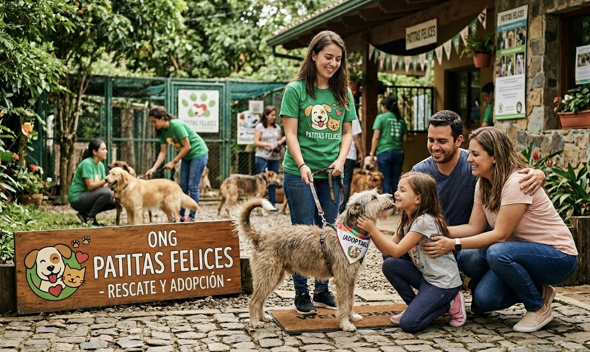
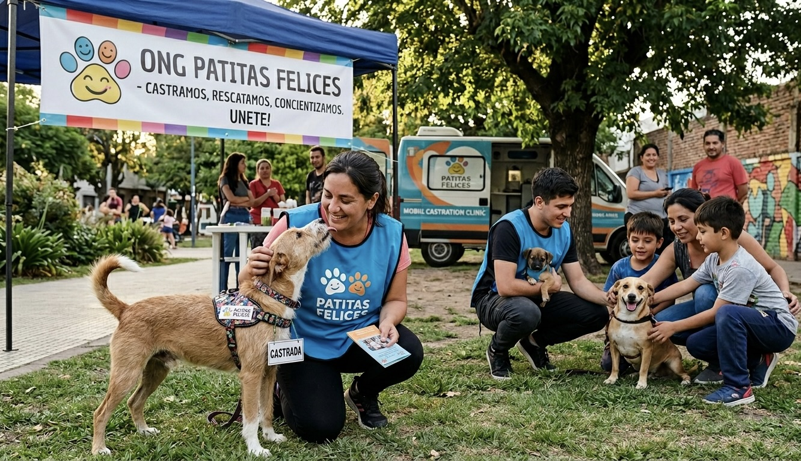

Bienvenidos a Patitas Felices
Somos una organización sin fines de lucro dedicada al rescate, rehabilitación y adopción de animales en situación de calle en el área metropolitana de Buenos Aires. Desde 2015 trabajamos junto a voluntarios, veterinarios y familias comprometidas para mejorar la vida de los animales más vulnerables.
Creemos que cada animal merece una segunda oportunidad. Conocé nuestra historia y los valores que nos mueven.

Nuestra Misión
Trabajar activamente para reducir la superpoblación de animales en situación de calle a través de la castración, el rescate responsable y la concientización comunitaria, promoviendo el vínculo positivo entre las personas y los animales.

¿Qué hacemos?
Llevamos adelante cuatro programas principales:
- Rescate y Rehabilitación: Intervenimos ante emergencias en la vía pública y alojamos animales en hogares de tránsito.
- Castración Responsable: Organizamos jornadas gratuitas para familias de bajos recursos.
- Adopción Consciente: Conectamos animales rescatados con familias evaluadas y comprometidas.
- Educación y Concientización: Damos charlas en escuelas y espacios comunitarios sobre tenencia responsable.
¿Cómo podés ayudar?
Hay muchas formas de sumarte a la causa, desde donde estés:
- Adoptá un animal rescatado y dale un hogar definitivo.
- Sé hogar de tránsito y recibí temporalmente a un animal en recuperación.
- Volunteate en nuestras jornadas de rescate o castración.
- Donà insumos veterinarios, alimento o dinero para cubrir gastos médicos.
- Compartí nuestras publicaciones en redes para llegar a más personas.
¿Querés participar? Contactate con nosotros.
Patitas Felices en números
- Año de fundación
- 2015
- Animales rescatados
- Más de 1.200 desde nuestros inicios
- Adopciones concretadas
- Más de 900 hogares felices
- Voluntarios activos
- Aproximadamente 60 personas
- Zona de trabajo
- San Miguel, Moreno, José C. Paz y alrededores
Recursos útiles
Te compartimos algunos organismos y recursos relacionados al bienestar animal: